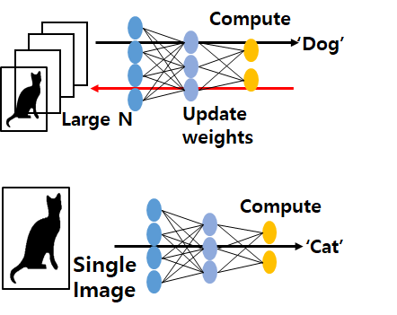
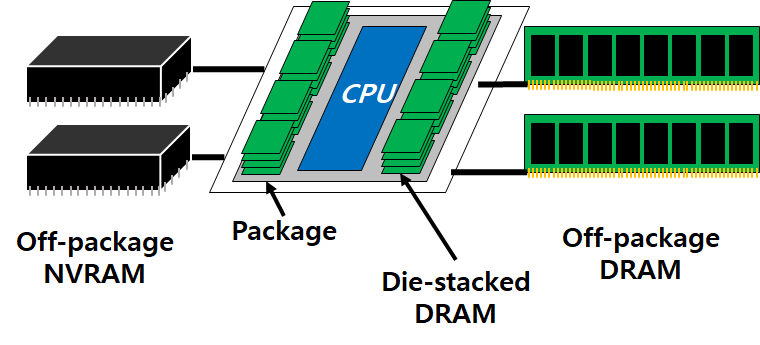

Acceleration System for Machine Learning
Recently, machine learning became a key application. As many user applications directly use machine learning service,
service provider has to meet the service level agreement to guarantee the user experience.
Considerable computation amount of machine learning workloads makes the problem difficult.
Dedicating resources to a workload makes us to guarantee SLA easily, but it wastes resources.
The goal of this study is to improve resource utilization and while guaranteeing performance of machine learning workloads.

Flexible and Cost-efficient HW-based Memory Mapping Mechanism
Hybrid memory systems have emerged with new memory techniques and memory models like 3D-stacked memory and non-volatile memory to make use of various memory strengths on a single system. On the existing homogeneous memory system, OS could serve access requests through the address translation from virtual to physical address, however hybrid memory systems require new mechanism to find the actual memory location. Our goal is to make flexible and cost-efficient HW-based memory mapping mechanism on hybrid memory system. This memory mapping structure could support systems to process memory requests quickly with minimum area overhead for mapping information.
